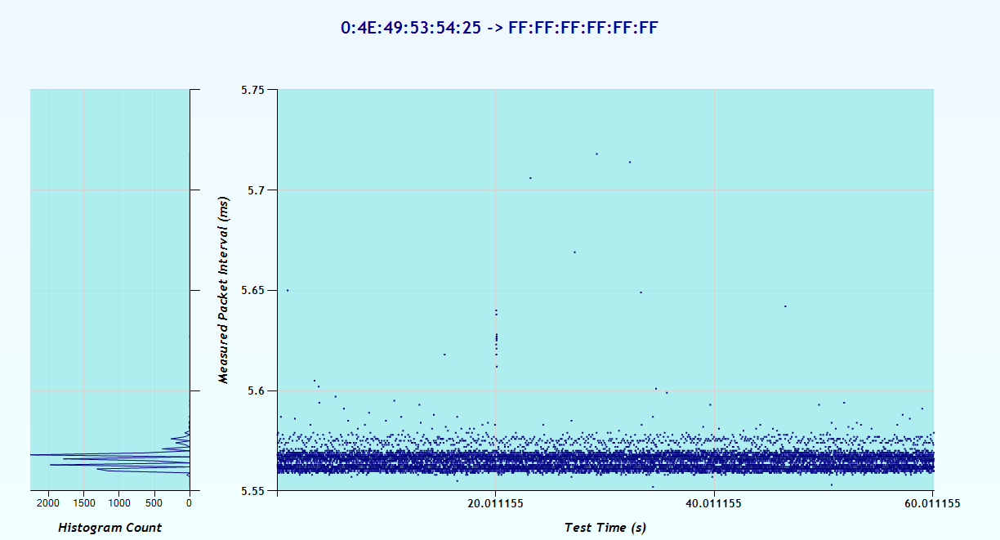

IENetP Test Tool Report
This report was automatically generated by the IENetP Test Tool. For more information about the software, please visit the IENetP SourceForge Page.
Information and Settings
General Information
| Description | Value |
| Capture File: | test4-backtrack-usb.enc |
| Report Generated: | Tuesday, September 11, 2012 @ 2:34:16 PM |
Additional Information
| Description | Value |
| Test Name: | |
| Test Description: | |
| Test Comment: | |
| Device Name: | |
| Device Manufacturer: | |
| Device Description: | |
| Device Model: | |
| Device Serial Number: | |
| Device Firmware Version: | |
| Device Comment: | |
Results
Jitter Statistics
| Statistic | Value | Percentage |
| Mean: | 5.565 ms | |
| Minimum: | 5.552 ms | 0.234% |
| Maximum: | 5.718 ms | 2.749% |
| Standard Deviation: | 0.006 ms | 0.107817% |
Jitter Graph

Process Log
9/11/2012 2:34:12 PM: Validate Capture File: Started.
9/11/2012 2:34:12 PM: Validate Capture File: 35040 packets
9/11/2012 2:34:12 PM: Validate Capture File: Completed in 0.514338 s
9/11/2012 2:34:12 PM: Process Capture File: Started.
9/11/2012 2:34:15 PM: Process Capture File: Completed in 2.150868 s
9/11/2012 2:34:15 PM: Process Wireshark Output: Started.
9/11/2012 2:34:15 PM: Process Wireshark Output: 10800 filtered packets
9/11/2012 2:34:15 PM: Process Wireshark Output: 1 dataset
9/11/2012 2:34:15 PM: Process Wireshark Output: Completed in 0.46758 s
9/11/2012 2:34:15 PM: Build Datasets: Started.
9/11/2012 2:34:15 PM: Build Datasets: Completed in 0.031172 s